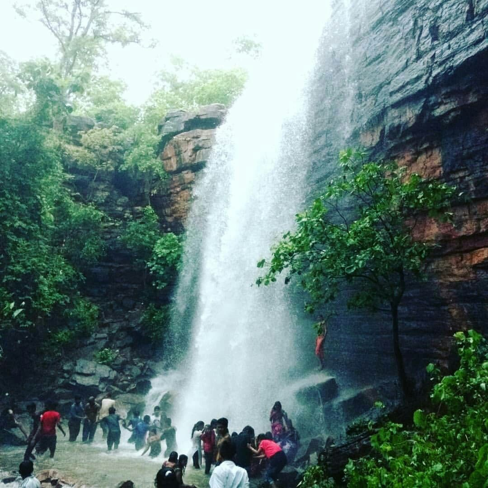
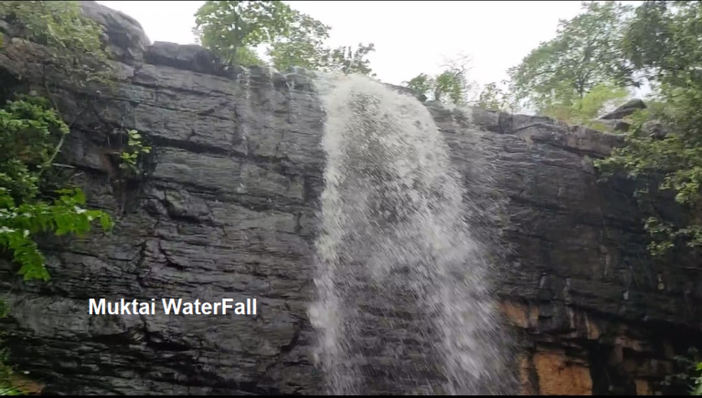

Muktai Falls
Muktai Waterfalls
Muktai is the Goddes of the Gond. And she was brave and clever, she fight against Corruption at that time. In the Muktai ( Doma ) village, there is the small Temple of the Muktabai Goddess.If you are from Nagpur, So I can explain to you very Deeply. So first you have to take the Nagpur to Chandrapur road bus, Or you can come in your own car or bicycle.
About

Muktai is Famous for the Waterfall which is falling from 40 feet above ground level. And people are bathing, Soaking ( enjoying ) there in that water. The water is falling down from above which is approx 40 or 45 Feet. Also, people are sleeping on that water, for fun. This is the ground-level Portion. If you are going to the upside there is another level of enjoyment and fun. If you are going upside, You can see the water where is from coming. Means you can sleep there on the water, for Fun. There are No any Special Entry Fees For the Muktai Waterfall, But you have to pay money for the Car and Bicycle parking is approx 20 Rs.